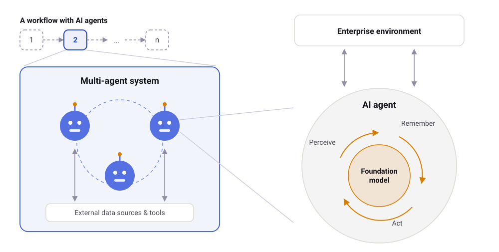

For decades, automating work meant: software does exactly what we specify — nothing more.
GenAI agents are different: they plan, delegate, and improvise.
The design question of the decade: how much autonomy do we grant them — and how do we stay in control?
Scroll ↓
GenAI-based multi-agent systems can automate knowledge work that
scripted automation never could. But building them well is a design discipline, not trial and
error. This story walks through the design knowledge we develop between research and industry
practice — from orchestration choices to agile agent development.
Act 1 · The design space
Orchestration is a choice
In practice, most agent systems are built the same way: try something, see what
happens, patch it. Our design science research systematizes what is actually being decided when
you build a multi-agent system — three interlocking design areas, sitting between IT governance
above and technical implementation below.
The design phase of GenAI-based multi-agent systems. Own schematic based on our
HICSS 2026 paper.
Stop building agent teams by trial and error — make orchestration an explicit design decision.
HICSS · 2026 · Open Access
Orchestrating GenAI-Based Multi-Agent Systems for Complex Knowledge Work Automation
A design science research approach: a morphological box of orchestration
options and four propositions for steering agent teams.
The next step: how orchestration keeps humans meaningfully in charge as
agent systems become more capable.
Act 2 · Control ⟷ Autonomy
Where do you set the dial?
Every orchestration decision sits somewhere on a spectrum between full control
and full autonomy. Our morphological box maps eleven such design dimensions. Try three of them —
drag the dial and watch how the same system changes character:
ControlAutonomy
Three of eleven design dimensions from the morphological box in our
HICSS 2026 paper (one per design area: task representation, agent architectures, delegation
mechanisms).
More autonomy shifts control from design time to run time — from prescribing behavior to observing it.
Act 3 · Agile agent development
When Scrum meets probabilistic software
Agile development assumes you can specify what "done" looks like. GenAI agents
break that assumption: they behave probabilistically, respond to context, and change under the
hood when models update. In development projects and expert interviews we mapped where exactly
the friction appears in a Scrum cycle — and what to do about it.
Where probabilistic agents strain the Scrum cycle. Own English schematic, based on our
forthcoming HMD article.
Challenge · 1
Backlog items & acceptance criteria
How do you write acceptance criteria for output that is probabilistic by design?
Challenge · 2
Definition of Done
When is an agent “done” if the same input can produce different results?
Challenge · 3
Sprint review
Reviewing variable behavior with stakeholders takes evaluation runs, not a single demo.
Challenge · 4
Stability over time
Model updates cause drift: a “finished” agent does not stay finished.
HMD Praxis der Wirtschaftsinformatik · forthcoming
Agile Development of Generative AI Agents
Challenges and hands-on recommendations from five development projects
and expert interviews — in German, written for practitioners.
WI · 2026 & DESRIST · 2026
Let the Agents Close the Loop / PRIME-GEN.ai
Where this leads: a GenAI-based multi-agent prototype for business
process improvement — live-demoed at DESRIST, to be presented at WI in Linz.
From lab to practice
Agentic Work Automation (AWA)
Generative AI opens new ways to automate complex knowledge work. GenAI-based
multi-agent systems go a step further: several specialized agents work together,
coordinate tasks, and support people in complex processes. In the
AWA
research project at the Fraunhofer FIT Institute Branch Information Systems, where I co-lead a
research group, we develop and test such systems along concrete industry use cases.

How a GenAI-based multi-agent system is embedded in an organization. Own schematic,
based on the AWA project (Fraunhofer FIT).
The project distills scientific and practical guidance along three phases —
published as compact “Knowledge Nuggets” for practitioners:
Define — goals, requirements, and use cases for GenAI-based multi-agent systems
Build — architecture and implementation
Run — steering, quality, and traceability
Knowledge Nugget · 01
Chatbots, Agents, Multi-Agent Systems
What AI agents and multi-agent systems actually are — a map of the terrain.
Project partners: Fraunhofer FIT, Ancud IT-Beratung, DATEV, soffico,
and Brauerei Gebr. Maisel, plus associated partners.
Which processes should agents take on in the first place? That selection problem —
narrowing a wide field of ideas down to a workable shortlist — plays out in
Story 01, where we map the use-case funnel.
Interested in talks, joint projects, or applied research on AI agents?
Get in touch.
Teaching
Teaching the builders
The same design thinking flows into my courses at Esslingen University — from
architecting AI solutions to understanding the processes they automate.
Lecture
Solution Architecture
A semester-long arc from AI and Python fundamentals through generative and
agentic AI to architecture principles and hands-on prototyping: student teams identify AI use
cases, pitch them, and build them — vibe coding included.
Lecture
Business Processes 1
From process modeling to process mining: understanding and improving how
work actually flows — the foundation for deciding what agents should automate.
Continue exploring
This is one of several stories
Where do the agents' judgments come from — and can they be trusted? That question
has its own story. The full publication list, my roles, and contact live on the main page.